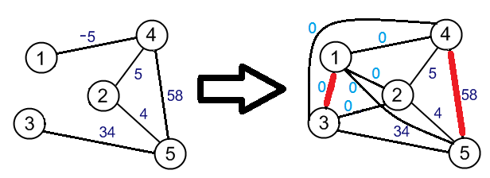
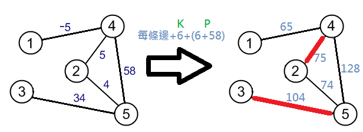
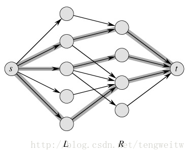
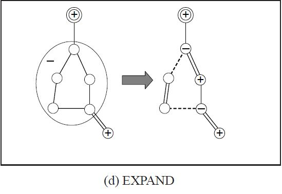

一般圖最大權匹配
甚麼是匹配?
匹配(最大邊獨立集)
一張圖$G=(V,E)$，這張圖的一個匹配$M$是邊集$E$的一個子集，其中每兩條邊都不相鄰（沒有公共頂點）最大匹配
圖$G$的一個 最大匹配 ，指邊數最多的匹配。
最大匹配 可能有不止一個，但 最大匹配 的邊數是確定的，並且不可能超過圖中頂點數的一半。完美匹配
圖$G$的 最大匹配 包含所有原圖的所有點，稱為 完美匹配若$G$為完全圖且頂點數為偶數時，必然存在 完美匹配
最大權匹配
maximum weight matching
一張圖$G=(V,E)$
$\forall e \in E$存在一個函數$w(e)$表示$e$的權重
滿足$ \sum w(e): e \in E'$為其所有匹配中最大的

最大權最大匹配
maximum weight maximum cardinality matching
圖$G$的一個 最大權最大匹配 $M=(V',E')$滿足$ \sum w(e): e \in E'$為其所有 "最大匹配" 中最大的

最大權完美匹配
maximum weight maximum perfect matching
若圖$G$存在完美匹配此時圖$G$的 最大權最大匹配 稱為 最大權完美匹配
匹配算法的轉換
最大權最大匹配 允許負權邊$(w(e)<0)$
但是 最大權匹配 不會有負權邊
則其 最大權匹配 $M=\varnothing$
調整邊的權重
先將圖$G$的所有負權邊其權重$w(e)$設為$0$在進行接下來的步驟
完全圖性質
在$G$為完全圖且沒有負權邊時
最大權最大匹配 = 最大權匹配計算 最大權最大匹配 後再把權重為$0$的邊去除即可

且零邊$ (w(e)=0) $可選可不選
但是 最大權最大匹配 允許負權邊和零邊
調整邊的權重
令 $K = max(\{\abs{w(e)}: e \in E ,\; w(e) ≤ 0 \}) + 1 $
若沒有負權邊或零邊則$K = 0$調整邊的權重
把圖$G$中所有的邊其權重$w(e)$加上$K$產生一張新圖$G'=(V,E')$
此時的新圖$G'$不存在負權邊和零邊問題來了
最大權最大匹配 不一定等於 最大權匹配
但是把所有邊的邊權加上一個超大數字$P$的話
最大權匹配 的結果就是 最大權最大匹配
調整邊的權重
令$P = \sum{w(e): e \in E'}$
把圖$G'$中所有的邊其權重$w(e)$加上$P$產生一張新圖$G''=(V,E'')$
其結果可以對應原圖的 最大權最大匹配

最大匹配算法
flow
最簡單的方法是用網路流，所以就不多講了Dinic在這種特殊圖上複雜度為$ \ord{|E|\sqrt{|V|}} $

交錯樹
在進行DFS或BFS尋找增廣路的過程產生的樹稱為交錯樹
設 $T=(V_t,E_t)$為在尋找增廣路時產生的交錯樹
定義:
偶點為樹上深度為偶數的點
奇點為樹上深度為奇數的點
Berge's Theorem
從圖上任取一個未匹配點，如果找不到以此點作為端點的增廣路，那麼這張圖會有一些最大匹配不會包含此點。
對稱差集
兩個集合 $A$ 和 $B$ 的「對稱差集」定義為
$A⊕B = (A∪B) - (A∩B)$
同一張圖上的兩種匹配$M$和$M^*$也可以計算對稱差集
$M⊕M^*$總共會產生六大類 connected component並令$M^*$是該圖的其中一個最大匹配。
如果$p$不在$M^*$上
$p$不在$M^*$上定理成立。
如果$p$在$M^*$上
1. $p$對於M來說是未匹配點。理所當然$p$不在$M$上。
2. 考慮$M⊕M^*$的六種情形。$p$不在$M$上，且$p$在$M^*$上，所以只有d或e符合條件。
3. $M$找不到以$p$作為端點的擴充路徑，所以d不符合條件，只有e符合條件。
4. 對於$M^*$來說，只要照著e顛倒匹配邊和未匹配邊， 就可以製造出另一個不會包含p的最大匹配， 成為1.的情形，定理還是成立。
匈牙利算法
複雜度
總共做了$n1$次dfs每次dfs花了$ \ord{|E|+n2+n1} $的時間
總複雜度為$ \ord{n1*(|E|+n2+n1)} $
匈牙利算法
多重匹配給一張圖G有n1個點和n2個點，n1個點之間沒有邊，n2個點之間也沒有邊，但是n1和n2個點之間有m條邊(簡單的來說就是n1個點和n2個點的二分圖啦)，沒有重邊；其中n2個點每個點u都有一個可接受匹配數$c_u$。 n1的點只能跟一個點匹配，但n2的點在不超過可接受匹配數的情況下，可以跟多個點匹配，求這張圖的最大匹配
把可以多重匹配的點拆開，能匹配幾次就拆成幾個點
設n2個點每個點$u$都有一個值$E_u$表示和$u$相鄰的邊數
複雜度$\ord{n1*(\sum{c_u*E_u}+n1+n2)}$
但是空間複雜度為$\ord{\sum{c_u*E_u}+n1+n2}$
雖然時間複雜度不變
但是效能變快了
空間複雜度也會和一般的匈牙利一樣
這樣基本問題就解決了，來計算一下時間複雜度
因為一朵花最少有三個點，縮花後成為一個點
由此推得：N個點的圖建立一棵交錯樹，最多縮花N/2次
$ \ord{|E|+|V|} + \ord{|E|+|V|} = \ord{|E|+|V|} $
BFS的時間加上縮花總時間
複雜度分析
之前有討論過bfs加上縮花的時間為$\ord{|E|+|V|}$
總共會進行$|V|$次bfs
定義函數
設$S ⊆ V$$δ(S) = \{ (u, v) ∈ E \; : \; u ∈ S, \; v ∈ V − S \} $
對單一點 $v ∈ V $ ，我們定義 $δ(v) = δ(\{v\}) $
二分圖最大權完美匹配的線性規劃
$ max \; \sum_{e∈E} \; w(e)x_e $
限制:
$x_e ≥ 0 \; : \forall e∈E $
$ x(δ(u)) = 1 \; : \forall u∈V $
$x(S) = \sum_{e∈S} \; x_e$
二分圖最大權完美匹配的對偶問題
$ min \; \sum_{u \in V} \; z_u $
限制:
$z_e ≥ 0 \; : \forall e∈E $
二分圖最大權完美匹配的對偶問題
在原始問題中，我們發現只要在$x_e \in \{0,1\} \; : \forall e \in E $時
$x_e = 1$的邊就是匹配邊，$x_e = 0$的邊就是非匹配邊
但是一定存在$x_e \in \{0,1\}$的整數解
所以想辦法讓他產成整數解即可
二分圖最大權完美匹配的對偶問題
我們稱$z_u$為u的vertex labeling
稱$z_e=0$的邊為等邊(Equality Edge)
讓所有匹配邊都是等邊
這樣就可以滿足$x_e \in \{0,1\}$的條件了
寫成數學符號長這樣
以「等邊」的概念，結合之前的匈牙利算法:
用「等邊」構成的增廣路不斷進行擴充
由於用來擴充的邊全是「等邊」
最後得到的最大權完美匹配當然全是「等邊」
調整 vertex labeling
vertex labeling 仍要維持大於等於的性質而且既有的「等邊」不能被改變。
調整 vertex labeling
設交錯樹 $ T = (U_t,V_t) $
令 $ d = min(\{z_e : e \in δ(V_t)\})$
設$u^+$為樹上偶點，$v^-$為樹上奇點
讓 $z_{u^+}$-= $d, \;$$z_{v^-}$ += $d$
並維持了$z_e ≥ 0 \; : \forall e∈E $的性質
接著就繼續找增廣路!
所以可以事先知道哪些點是奇點
哪些點是偶點
所有$u$為偶點，$z_u=max(\{w(e): e \in E\})$
所有$v$為奇點，$z_v=0$
如果要做最大權二分匹配
vertex labeling 額外增加一個限制：
對於所有匹配點$z_u > 0$
vertex labeling為 0 的點最後將成為未匹配點
KM演算法
Kuhn-Munkres algorithm這個算法可以求二分圖的最大權完美匹配
code
複雜度分析
dfs花$\ord{|V|^2}$的時間
因為交錯樹最多有$|V|-1$條邊
故主程式裡的無限迴圈最多執行$\ord{|V|}$次
總共有$|V|$個點需要被增廣
總複雜度為:$\ord{|V|*|V|*|V|^2}=\ord{|V|^4}$
還可以更好
其實這算法複雜度可以到$\ord{|V|^3}$
$\implies$每次增加新的等邊後不需要重新DFS
一般圖最大權匹配
定義
設$S⊆V$
$ \gamma(S)= \{(u,v) \in E \; : \; u \in S, \; v \in S\} $
$ O = \{ B⊆V \; : \; |B|是奇數且|B|≥3 \} $
一般圖最大權完美匹配的線性規劃
$ max \; \sum_{e∈E} \; w(e)x_e $
限制:$ x(δ(u)) = 1 \; : \forall u∈V $
$x(\gamma(B))≤\floor{\frac{|B|}{2}} \; : \forall B \in O$
$x_e ≥ 0 \; : \forall e∈E $
一般圖最大權完美匹配的對偶問題
$ min \; \sum_{u \in V} \; z_u + \sum_{B \in O} \; \floor{\frac{|B|}{2}} z_B $
限制:
$z_B ≥ 0 \; : \forall B∈O $
$z_e ≥ 0 \; : \forall e∈E $
和二分圖一樣
我們必須滿足$x_e \in \{0,1\} \; : \forall e∈E $
因此必須在最大權完美匹配的時候
讓所有匹配邊都是等邊
和二分圖不同的是，多了$z_B$要處理
$z_B$什麼時候會大於0?
從方程式可以看出盡量讓$z_B=0$是最好的做法
但在不得已的時候還是要讓$z_B>0$
$z_B$什麼時候會大於0?
在$x(\gamma(B))=\floor{\frac{|B|}{2}}$且$x(δ(B)) = 1$時
讓$z_B>0$就可以了
$z_B>0$是沒有意義的
所以可以有以下的對應關係
$z_B>0 \; \longrightarrow \; x(\gamma(B))=\floor{\frac{|B|}{2}}, \; x(δ(B)) = 1 \qquad \forall B \in O$
以「等邊」的概念，結合之前的帶花樹算法:
用「等邊」構成的增廣路不斷進行擴充
由於用來擴充的邊全是「等邊」
最後得到的最大權完美匹配當然全是「等邊」
花
遇到花的時候，要把它縮成一個偶點
把花中所有點都設為偶點，並讓他的$z_B=0$
直到滿足某些條件才會拆開
所以不能用之前的方法紀錄花
花
如果沒有特別說明我們之後提到的「點」
都有包含縮花後產生的點
花
因為花也有可能縮成點被加入queue中
且花的數量是不固定的
因此我們不能像之前一樣枚舉每個點看看有沒有增廣路
所以在BFS的時候必須要把所有未匹配點都丟到queue中
總而言之
這個算法可以分成四個部分
GROW 、AUGMENT 、SHRINK 、EXPAND

調整 vertex labeling
vertex labeling 仍要維持大於等於的性質而且既有的「等邊」不能被改變
還要讓$z_B$盡量的小
以$u^-$來表示$u$在交錯樹上為奇點
以$u^+$來表示$u$在交錯樹上為偶點
以$u^{\varnothing}$來表示$u$不再任何一棵交錯樹上
並同時代表縮花之後的點
花也可以有奇花偶花之分
因此也適用$B^+$、$B^-$、$B^{\varnothing}$等符號
調整 vertex labeling
設目前有$r$棵交錯樹 $ T_i = (U_{t_i},V_{t_i}) \; : 1≤i≤r$
令
$ d1 = min(\{z_e: e=(u^+,v^{\varnothing})\})$
$ d3 = min(\{z_{B^-}: B^- \in O\})/2$
注意這裡$B$是縮花之後的點，所以可以有奇偶性
設$d=min(d1,d2,d3)$調整 vertex labeling
讓
$ \quad z_{u^+}$ -= $d$
$ \quad z_{v^-}$ += $d$
$ \quad z_{B^+}$ += $2d$
$ \quad z_{B^-}$ -= $2d$
為了防止$z_B < 0$的情況
所以要把這朵花拆了(EXPAND)
拆花後只留下花裡的交替路徑
並把花裡不在交替路徑上的點設為未走訪$(\varnothing)$
expand
調整 vertex labeling
如此便製造了一條(以上)的等邊，既有等邊保持不動
並維持了$z_e ≥ 0 \; : \forall e∈E $的性質
且最低限度增加了$z_B$
可以繼續找增廣路了!
最大權匹配
剛才的作法找出來的是 最大權完美匹配 啊我們要求的是 最大權匹配
如果要做最大權匹配
vertex labeling 額外增加一個限制：
對於所有匹配點$u$，$z_u > 0$
vertex labeling為 0 的點最後將成為未匹配點
一般圖最大權匹配
code
Edmonds' Maximum Weight Matching Algorithm
這樣就不會出現浮點數誤差了

|
如果你使用
get_pr(b2,11)flower[b2]會變成{9,10,11,2,3,4,b1}並回傳2 如果你使用 get_pr(b2,2)flower[b2]會變成{9,b1,4,3,2,11,10}並回傳4 |
複雜度分析
每次縮花拆花要$\ord{\abs{V}}$的時間
最多總共有$\ord{\abs{V}}$朵花，故花的處理花費$\ord{\abs{V}^2}$
而BFS花費$\ord{\abs{V}+\abs{E}}$
因此找增廣路花費$\ord{\abs{V}+\abs{E}}+\ord{\abs{V}^2}=\ord{\abs{V}^2}$
複雜度分析
故總時間複雜度為$\ord{\abs{V}^3}$
題目
二分圖匹配
二分圖多重匹配
一般圖匹配
二分圖最大/最小權匹配
一般圖最大權匹配
維基百科 演算法筆記 vfleaking的博客 Blossom V: A new implementation of a minimum cost perfect matching algorithm Implementation of $\ord{n m \; log \; n}$ Weighted Mathings in General Graphs: The Power of Data Strutures